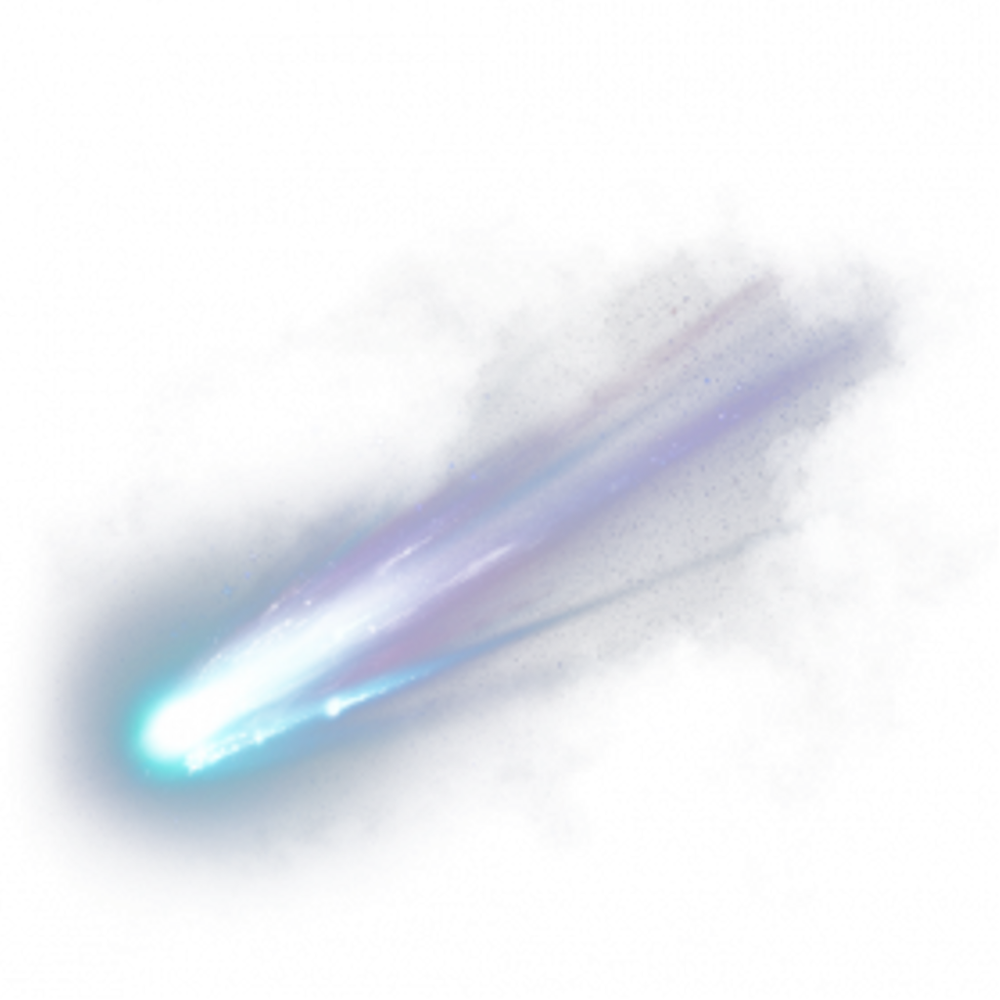
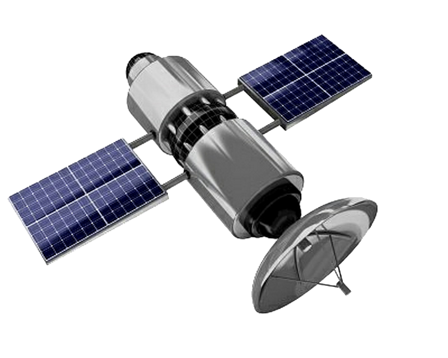

Asteroid
Asteroid memiliki lintasannya sendiri untuk mengorbit terhadap matahari yang berbentuk lonjong atau elips. Dalam berputar mengelilingi matahari, asteroid berputar- putar dan terkadang hingga terjatuh tak tentu arah. Keadaan yang demikian inilah yang terkadang membuat bahaya karena apabila menabrak Bumi maka permukaan Bumi akan rusak dan dapat merusak kehidupan makhluk hidup di Bumi.
Elemen yang menyusun asteroid terdiri atas debu dan juga es. Debu- debu menjadi beku karena keberadaan es ini, ditambah dengan jarak yang cukup jauh dari matahari. Debu dan partikel ini sangat keras sehingga menyebabkan asteroid adalah benda yang sangat keras dan berbahaya. Asteroid tersebar di seluruh bagian langit, namun yang paling banyak terdapat di sabuk asteroid yaitu di antara orbit planet Mars dan Jupiter. Di sabuk asteroid ini jumlah asteroid sekitar 750.000 asteroid.

Komet
adalah satu di antara benda langit yang ditutupi kabut tipis panjang dan sering disebut bintang berekor. Kendati demikian, komet bukan bintang. Komet terdiri dari kumpulan debu dan yang membeku saat berada jauh dari matahari. Bila komet mulai mendekati matahari, partikel-partikel ini akan menguap sehingga membentuk kepala dan ekor komet.
Ekor komet membalikan cahaya matahari dan bisa dilihat dari bumi bila komet itu cukup dekat. Ekor komet berbeda-beda bentuk dan ukurannya. Jika makin dekat komet tersebut dengan matahari maka makin panjanglah ekornya, dan ada pula komet yang tidak berekor. Komet bergerak mengelilingi matahari berkali-kali, tetapi peredarannya memakan waktu yang lama. Komet ini dibedakan menurut rentangan waktu orbitnya. Rentangan waktu pendek ialah kurang dari 200 tahun dan rentangan waktu yang panjang, yaitu lebih dari 200 tahun. Secara umumnya bentuk orbit komet yaitu elips.

Satelit
satelit adalah segala sesuatu yang mengorbit di sekitar objek yang lebih besar. Satelit alami adalah benda langit di ruang angkasa yang mengorbit di sekitar benda yang lebih besar. Bulan disebut satelit alami karena mengorbit planet. Sementara itu, satelit buatan adalah satelit yang dibuat oleh manusia dan diluncurkan ke orbit dengan menggunakan roket. Ada ribuan satelit buatan yang mengorbit Bumi. Satelit dapat dibedakan berdasarkan bentuk dan keguaananya seperti: satelit cuaca, satelit komonikasi, satelit iptek dan satelit militer.
Seluruh pergerakan satelit dipantau dari bumi atau yang lebih dikenal dengan stasiun pengendali. Cara kerja dari satelit yaitu dengan cara uplink dan downlink. Uplink yaitu transmisi yang dikirim dari bumi ke satelit, sedangkan downlink yaitu transmisi dari satelit ke stasiun bumi.
Antena satelit sangat penting peranannya dalam jaringan komunikasi satelit. Karena benda yang ini berfungsi sebagai penerima transimisi di setiap kawasan di dunia. Sedangkan satellite spacing (penempatan satelit) digunakan agar dalam melakukan transmisi lebih mudah berdasarkan kawasannya.